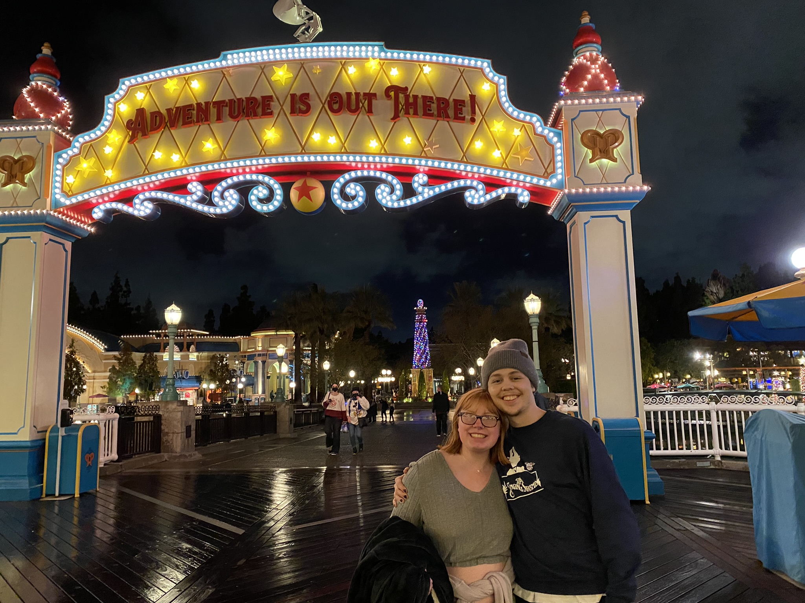
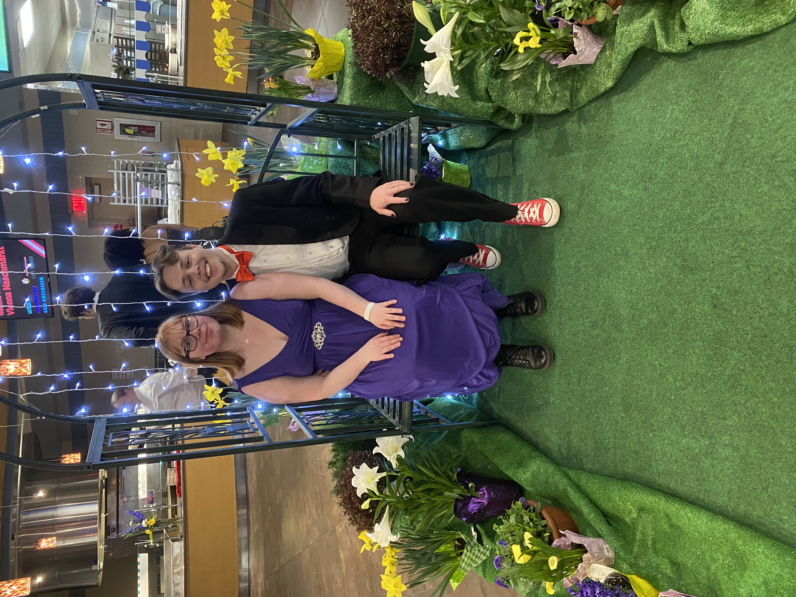
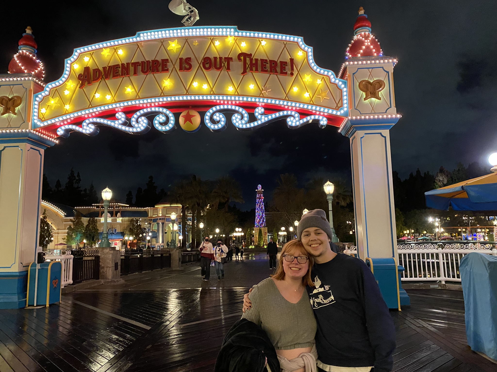
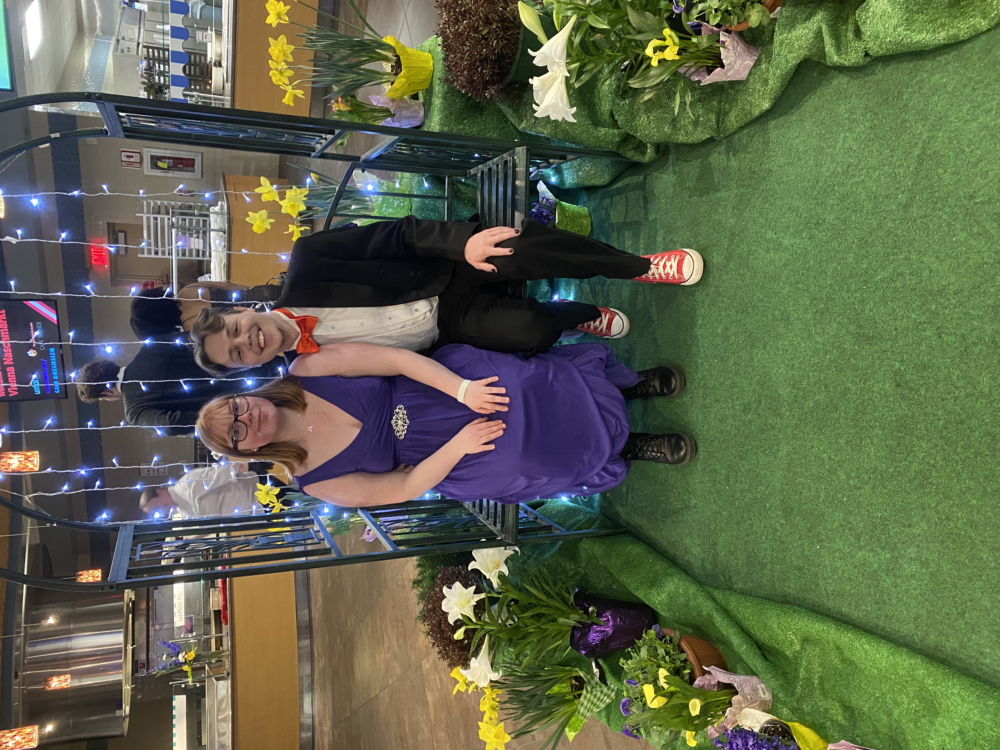

Hello! My name is Spencer Keith, and I am a (super) senior student at the University of Wisconsin - Eau Claire. My major is Computer Science Comprehensive. I am also an intern at the ResCom Help Desk on campus, a nine-semester member of the Singing Statesmen choir, and the Business Manager of The Innocent Men a cappella group.
Though Computer Science is my major, it is also one of my passions. After two major changes, I found a home in CS and have fallen in love with the field. I love software engineering, but also have string interest in cybersecurity, web development, machine learning, and other areas of the field. I know many different programming languages, including Python, HTML/CSS/JS, SQL, and C, but consider my favorite language to be C++, and my best language to be Java.
As my aforementioned roles in unversity music groups might suggest, I am also incredibly passionate about music! I love to write, produce, and release original music (even if I usually end up hating it due to my perfectionism). I also create arrangements for the aforementioned Innocent Men. This semester (my last semester in the group before graduation), we are holding a ballads concert which features three arrangements from me: "Fix You" by Coldplay, "Break My Heart Again" by FINNEAS, and my solo song, "Karma Police" by Radiohead.
My goals for the future are to graduate, to move back to Minnesota with my partner, to obtain a position that I love and can grow within, and to (eventually) purchase a house and start a family. I would be happy with a position in most any subset of the Computer Science field, but would have especial interest in software engineering, cybersecurity, or web development.
GitHub
github.com/skeith-dev
Work Experience
- ResCom Help Desk - Intern Technician
- Eau Claire Energy Cooperative - IT Intern
Education
University of Wisconsin - Eau Claire
Computer Science Comprehensive Major
Expected graduation: December 2022
GPA: 3.6
Awards
- Singing Statesmen Service Scholarship - 2021-2022 academic year
Contact Information
Email: KEITHSE2556@uwec.edu
Phone: (952) 412 - 2767
Social Medias
Handshake: app.joinhandshake.com/stu/users/12671753
LinkedIn: linkedin.com/in/spencer-keith-Bab210250

 


